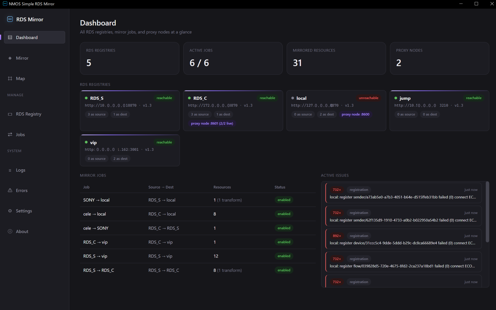
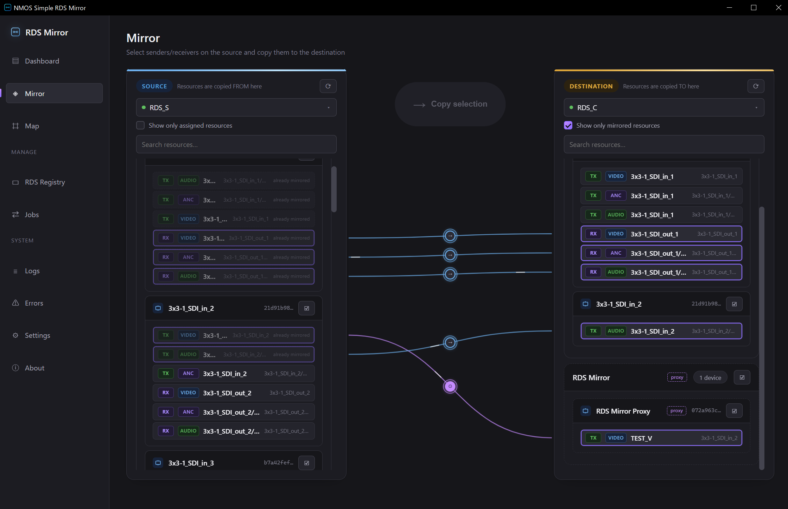
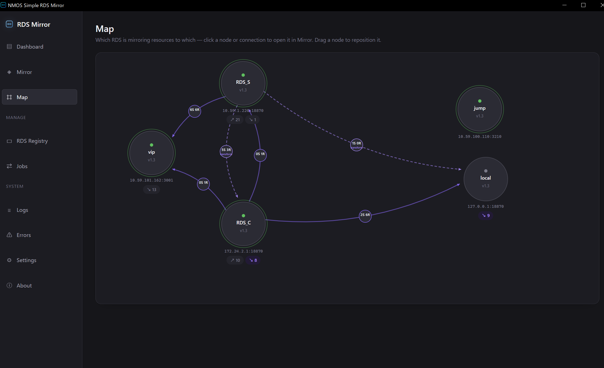

使い方ガイド
NMOS Simple RDS Mirror — 3つの画面でおさえる基本操作
NMOS Simple RDS Mirror — 3つの画面でおさえる基本操作
STEP 1 — 全体状況の把握
起動すると最初に表示されるのがDashboardです。登録されているRDS、有効なミラージョブ、実際にミラーされているリソース数が、ここで一目で分かります。

6 / 6のような表示)を、ここでまず確認する。STEP 2 — ミラーの実行
左に選択元(SOURCE)、右に宛先(DESTINATION)のRDSを選ぶと、それぞれのセンダー/レシーバーが一覧表示されます。左でリソースを選んで中央のCopy selectionを押すと、右側に登録され、接続線がつながります。

STEP 3 — 構成の俯瞰
複数のRDSを組み合わせて運用していると、「どこからどこへ何本ミラーしているか」が分かりにくくなります。Mapは、その全体像をノードと線で可視化するページです。ノードや線をクリックすると、該当するMirror画面へジャンプします。
